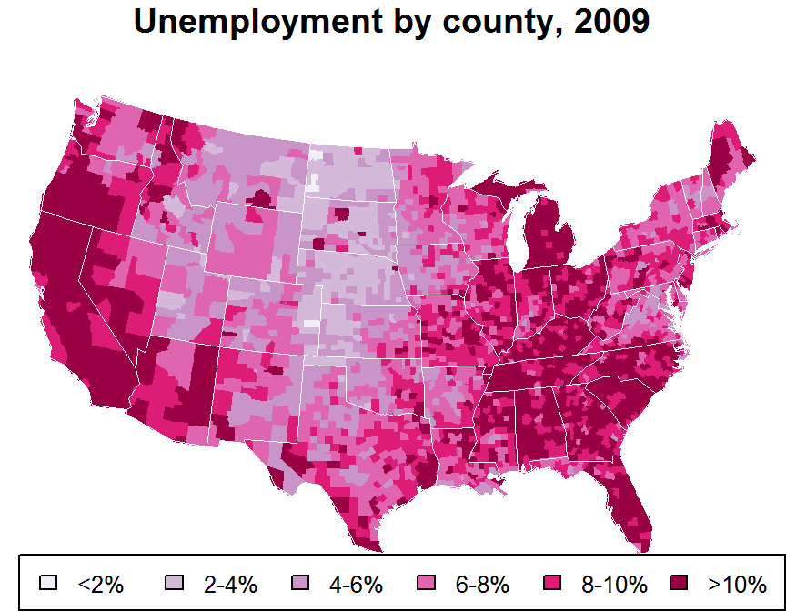
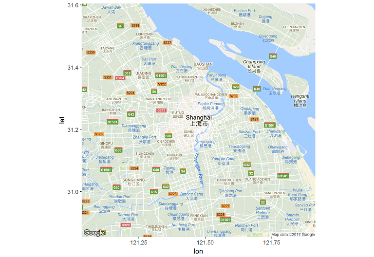
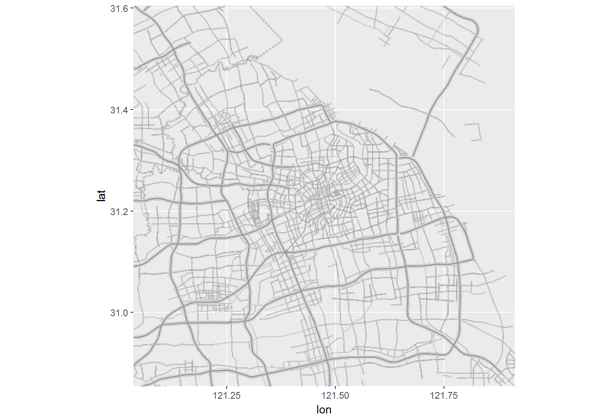
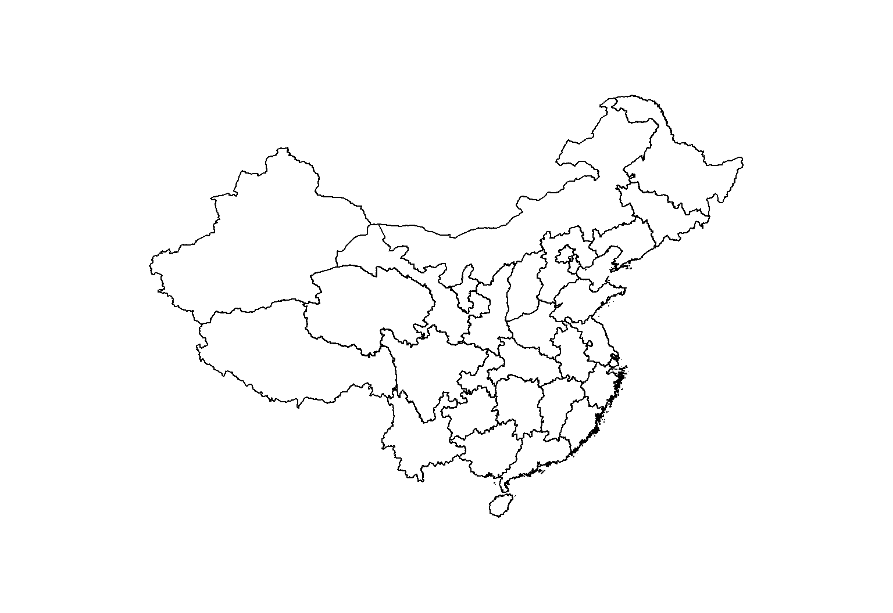
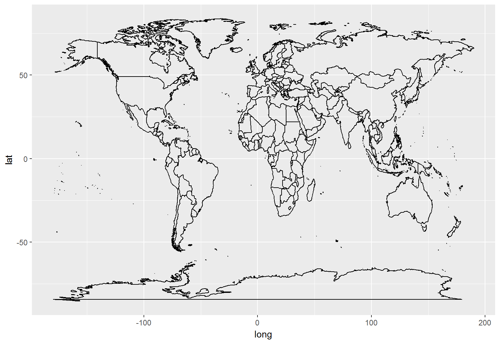
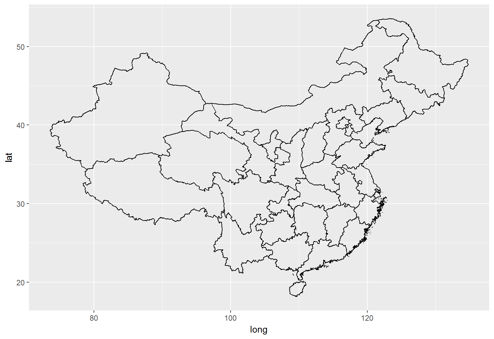

2017-05-20 16:30:51
目录
基础
可视化地图的构成
- 数据: 经纬度、测量值、属性，等
- 图层
- 控制: 投影、网格、比例尺、大地控制，等
- 视觉元素: 颜色、符号、文字标注，等
- 辅助: 标题、插图、所略图、接合表、制图说明，等


参考地图 (Reference map)
- 我们日常用的主要就是参考图
- 不包含业务数据的地图图层: 政区、地形、地质……
- 底图的控制参数（投影方法、坐标系等）将贯彻整个可视化过程
- 直接用地图图片作底图

- 绘制轮廓线/多边形作底图

主题地图 (Thematic map)
- 等值区域地图 (Choropleth map)

- 比例符号图 (Proportional Symbols)

- 密度点图 (Dot density map)

- 不连续地图 (Non-continuous map)
 https://axismaps.github.io/thematic-cartography/images/cartogram_US_pop.jpg
https://axismaps.github.io/thematic-cartography/images/cartogram_US_pop.jpg
{kind=link}
一般作图步骤
- 数据准备
- 底图栅格/矢量数据
- 数据层元数据处理
- 制作底图（参考地图）
- 直接由栅格数据合成
- 通过矢量数据生成
- 覆盖数据层（主题地图）
- 将处理后的数据映射到视觉通道
- 合并图层并出图
GIS数据
GIS数据结构
Wikipedia: 地理信息系统(GIS)……是用于输入、存储、查询、分析和显示地理数据的计算机系统，可以分为以下五个部分…：人员，…数据，…硬件，…软件，…过程…
其中, GIS内部数据即空间数据(spatial data)
- 包括3方面内容
- 空间位置
- 拓扑关系
- 属性
- 数据结构可分2大类
- 显式（栅格数据grid）
- 一系列x、y坐标定位的像元(pixel)
- 隐式（矢量数据vector）
- 坐标对->点(point/node)，点系列->线(line/arc)，闭合线->面(polygon)
- 常见模型: ESRI的Shapefile，Coverage，Geodatabase， …
- 显式（栅格数据grid）
怎样获取地理数据?
非法自行测绘- 向测绘信息部门申请
- 从共享/开放地图数据网站获取，如
地理数据长什么样？
- 从Diva GIS下载中国政区边界地理数据CHN_adm.zip
- .shp, .shx, .dbf构成ERSI地理数据集
利用
rgdal::readOGR包读取 -> SpatialPolygonsDataFramedf <- rgdal::readOGR("~/MAP_DTA/CHN_adm/CHN_adm0.shp") str(df)..@ data : 'data.frame': 1 obs. of 70 variables: .. ..$ ID_0 : Factor w/ 1 level "49": 1 .. ..$ ISO : Factor w/ 1 level "CHN": 1 .. .. ... ..@ polygons :List of 1 .. ..$ :Formal class 'Polygons' [package "sp"] with 5 slots .. .. .. ..@ Polygons :List of 2013 .. .. .. .. ..$ :Formal class 'Polygon' [package "sp"] with 5 slots .. .. .. .. .. .. ..@ labpt : num [1:2] 109.7 18.2 .. .. .. .. .. .. ..@ area : num 1.75e-05 .. .. .. .. .. .. ..@ hole : logi FALSE .. .. .. .. .. .. ..@ ringDir: int 1 .. .. .. .. .. .. ..@ coords : num [1:61, 1:2] 110 110 110 110 110 ...
SpatialPolygonsDataFrame类
sp包的标准地理数据类型，包含5个槽(slot，即属性)
- S4对象
- 较S3的封装性更好（但Google R风格指南并不推荐使用）
- 用@（而非$）引用
- 包含元素
- 多边形Polygons，含labpt、area、hole、ringDir、coords五个属性
- 元数据data，数据框，存储数据集的基本信息
- 绘制顺序plotOrder，数值，该SpatialPolygonsDataFrame在绘制时的顺序
- 坐标边界bbox，数据框，坐标系四角边界
- 投影规则proj4string，
CRS类S4对象
- 可以直接用于
maps、maptools、sp等包 - 可以通过
broom::tidy转化为数据框
broom::tidy
broom包可以自动将统计分析对象转为数据框SpatialPolygonsDataFrame转化后变成一个7列数据框，便于ggplot2制图head(broom::tidy(df))
long lat order hole piece group id 1 121.7179 39.44096 1 FALSE 1 0.1 0 2 121.7179 39.44181 2 FALSE 1 0.1 0 3 121.7182 39.44181 3 FALSE 1 0.1 0 4 121.7182 39.44236 4 FALSE 1 0.1 0 5 121.7185 39.44236 5 FALSE 1 0.1 0 6 121.7185 39.44320 6 FALSE 1 0.1 0
坐标系偏移
- 地理数据的定位，取决于每个点的经纬度测定值
- 经度(longitude): 相当于x坐标，-180 ~ 180
- 纬度(latitude)：相当于y坐标，-90 ~ 90
- 在国内，经常需要在不同坐标测量系统之间转换
- 转化方法
- 调用官方API进行偏置
- 利用
recharts::convCoord进行偏置
底图
栅格底图
利用ggmap包，直接获取地图图块
- Google Maps / 行政区划
library(ggmap)
ggmap(get_map("shanghai", maptype="terrain"))

- Stamen / 政区框架
ggmap(get_map("shanghai",
maptype="terrain-lines", source="stamen"))

矢量底图(1) - maps包
- 调用内置的地图集
library(maps)
map("world")

- 用
sp包支持的地图数据格式
map(rgdal::readOGR(
"CHN_adm/CHN_adm1.shp"))

矢量底图(2) - ggplot2包
- 调用内置的地图集，转为数据框
library(ggplot2)
wmap <- map('world', plot=FALSE, fill=TRUE)
wmap <- maptools::map2SpatialPolygons(
wmap, IDs=wmap$names)
wmap <- broom::tidy(wmap)
ggplot()+geom_path(
aes(long, lat, group=group), data=wmap)

- 用
sp包支持的地图数据格式
cmap <- rgdal::readOGR(
"CHN_adm/CHN_adm1.shp")
cmap <- broom::tidy(cmap)
ggplot()+geom_path(
aes(long, lat, group=group), data=cmap)

底图子集
maps
map('state', region=c(
'new york', 'new jersey', 'penn'))
txt <- data.frame(
x=c(-76, -78, -74), y=c(42.5, 40.5, 40),
txt=c("New York", "Pennsylvania", "New Jersey"))
text(x=txt$x, y=txt$y, labels=txt$txt)

ggplot2
map <- map('state', plot=FALSE, fill=TRUE,
region=c('new york', 'new jersey', 'penn'))
map <- maptools::map2SpatialPolygons(
map, IDs=map$names)
ggplot() + coord_map() + geom_path(
aes(long, lat, group=group), data=map) +
geom_text(aes(x, y, label=txt), data=txt)

复合底图
# 州级图层
map1 <- map('state', plot=FALSE, fill=TRUE)
map1 <- maptools::map2SpatialPolygons(
map1, IDs=map1$names)
# 县级图层
map2 <- map('county', plot=FALSE, fill=TRUE)
map2 <- maptools::map2SpatialPolygons(
map2, IDs=map2$names)
# 先画县级图层
p <- ggplot() + coord_map("cylindrical") +
geom_polygon(
aes(long, lat, group=group),
data=map2, fill="gray",
color="gray95", size=0.01)
# 添加州级图层
p <- p +
geom_path(
aes(long, lat, group=group),
data=map1, color="white", size=0.75)
p
- 准备两个图层的数据
- 驱动低级图层，多边形上色、绘制细边
- 上覆高级图层，绘制边界粗边

数据地图
数据和标注
ggplot2包
- 数据层叠加在底图上方，也可下方
- 通过
group关联底图，映射视觉通道 - 直接通过坐标定位，构成独立的视觉元素
- 通过
- 标注层叠加在数据层上方，也可下方
- 文本、标签等一般要坐标定位
- 图例、标题等按默认参数添加即可
maps包
一般不做底图，直接将数据映射到视觉通道，并展示为地图元素
数据层
美国失业数据集unemp和county.fips，在maps包中
data(unemp) data(county.fips)
分别看看各自的结构，以fips关联
str(unemp)
## 'data.frame': 3218 obs. of 3 variables: ## $ fips : int 1001 1003 1005 1007 1009 ... ## $ pop : int 23288 81706 9703 8475 25306 ... ## $ unemp: num 9.7 9.1 13.4 12.1 9.9 16.4 ...
str(county.fips)
## 'data.frame': 3085 obs. of 2 variables: ## $ fips : int 1001 1003 1005 1007 1009 ... ## $ polyname: Factor w/ 3085 levels "alabama,autauga",..:
- 将unemp、county.fips合并，关联组名polyname和数值unemp
- 并合并后的数据合并到map2，关联每个点的坐标
unemp.map <- merge(broom::tidy(map2),
merge(unemp, county.fips, by="fips"),
by.x="id", by.y="polyname", all.x=TRUE)
str(unemp.map)
## 'data.frame': 87949 obs. of 10 variables: ## $ id : chr "alabama,autauga" "alabama,autauga" ... ## $ long : num -86.5 -86.5 -86.5 -86.6 -86.6 ... ## $ lat : num 32.3 32.4 32.4 32.4 32.4 ... ## $ order: int 1 2 3 4 5 6 7 8 9 10 ... ## $ hole : logi FALSE FALSE FALSE FALSE ... ## $ piece: Factor w/ 1 level "1": 1 1 1 1 1 1 ... ## $ group: Factor w/ 3085 levels "alabama,autauga.1",..: ## $ fips : int 1001 1001 1001 1001 1001 1001 ... ## $ pop : int 23288 23288 23288 23288 23288 ... ## $ unemp: Factor w/ 6 levels "<2%","2-4%","4-6%",..:
映射视觉通道
# 失业率分段
unemp.map$unemp <- cut(unemp.map$unemp, c(
seq(0, 10, 2), 100), labels=c(
"<2%", "2-4%", "4-6%", "6-8%", "8-10%", "10%+"))
# 自定义颜色
colors <- c("#F1EEF6", "#D4B9DA", "#C994C7",
"#DF65B0", "#DD1C77", "#980043")
names(colors) <- c(
"<2%", "2-4%", "4-6%", "6-8%", "8-10%", "10%+")
# 作图，将底图叠在上方
ggplot() + coord_map("cylindrical") +
geom_polygon(aes(
long, lat, group=group, fill=unemp),
data=unemp.map) +
scale_fill_manual(values=colors) +
geom_path(
aes(long, lat, group=group),
data=map2, color="gray95", size=0.01) +
geom_path(
aes(long, lat, group=group),
data=map1, color="white", size=0.75) +
labs(title="Unemployment by county, 2009")
- 失业率数据映射到色谱(
fill=unemp) - 度量方法为离散、自定义色谱
- 两层底图采用geom_path，逐级覆盖在主题底图上

用例
等值地图
用maps实现上例
mar=c(0, 0, 1.1, 0)
par(mar=mar)
data(unemp)
data(county.fips)
# 定义色谱
colors = c("#F1EEF6", "#D4B9DA", "#C994C7", "#DF65B0", "#DD1C77", "#980043")
unemp$colorBuckets <- as.numeric(cut(unemp$unemp, c(seq(0, 10, 2), 100)))
leg.txt <- c("<2%", "2-4%", "4-6%", "6-8%", "8-10%", ">10%")
# 州县名与地图定义匹配
cnty.fips <- county.fips$fips[match(map("county", plot=FALSE)$names,
county.fips$polyname)]
colorsmatched <- unemp$colorBuckets [match(cnty.fips, unemp$fips)]
map("county", col = colors[colorsmatched], fill = TRUE, resolution = 0,
lty = 0, projection = "polyconic", mar=mar)
map("state", col = "white", fill = FALSE, add = TRUE, lty = 1, lwd = 0.2,
projection="polyconic", mar=mar)
title("Unemployment by county, 2009")
legend("bottomright", leg.txt, horiz = TRUE, fill = colors, cex=0.8)
比例符号图
maps实现人口气泡图
mar=c(0, 0, 1.1, 0)
par(mar=mar)
map("world", lty=0, fill=TRUE, col="gray", bg='lightblue1', mar=mar)
map("world", lwd=0.01, col="white", add=TRUE, mar=mar)
map("world", lwd=0.02, col="lightblue1", interior=FALSE, add=TRUE, mar=mar)
map.cities(label=FALSE, minpop=100000, maxpop=199999, cex=0.1, pch=16, col='blue')
map.cities(label=FALSE, minpop=200000, maxpop=499999, cex=0.2, pch=16, col='cyan')
map.cities(label=FALSE, minpop=500000, maxpop=999999, cex=0.5, pch=16, col='green')
map.cities(label=FALSE, minpop=1000000, maxpop=4999999, cex=1, pch=19, col='yellow')
map.cities(label=FALSE, minpop=5000000, maxpop=9999999, cex=2, pch=19, col='orange')
map.cities(label=FALSE, minpop=10000000, cex=5, pch=19, col='red')
title("Big cities in the world, as of Jan 2016")
比例符号图（续）
ggplot2实现上例
# 底图和边界
wmap <- map("world", fill=TRUE, plot=FALSE)
wmap <- maptools::map2SpatialPolygons(wmap, IDs=wmap$names)
wmap.bou <- map("world", plot=FALSE, interior=FALSE)
wmap.bou <- maptools::map2SpatialLines(wmap.bou)
wmap.bou <- SpatialLinesDataFrame(wmap.bou, data=data.frame(ID=1:length(wmap.bou)))
# 人口分段，映射颜色和尺寸
data(world.cities)
world.cities <- subset(world.cities, pop>100000)
world.cities$popl <- cut(world.cities$pop, 100000 * c(1000, 100, 50, 10, 5, 2, 1))
world.cities$popl <- factor(world.cities$popl, levels=rev(levels(world.cities$popl)))
cols <- c('red', 'orange', 'yellow', 'green', 'cyan', 'blue')
sizes <- c(5, 2, 1, 0.5, 0.2, 0.1)
names(cols) <- names(sizes) <- levels(world.cities$popl)
# 国界、海岸线底图，上覆数据层
ggplot() + geom_polygon(aes(long, lat, group=id), data=wmap, fill='gray', color="gray95", size=0.01) +
geom_path(aes(long, lat, group=id), dat=wmap.bou, color="gray") +
theme(panel.background=element_rect(fill="lightblue1"), legend.position="bottom") +
geom_point(aes(long, lat, color=popl, size=popl), alpha=0.5,data=world.cities) +
scale_color_manual(values=cols) + scale_size_manual(values=sizes, guide='none') +
labs(title="Big cities in the world, as of Jan 2016")

比例符号图（续）
ggplot2实现地理柱形图
# 底图和边界
wmap <- map("world", fill=TRUE, plot=FALSE)
wmap <- maptools::map2SpatialPolygons(wmap, IDs=wmap$names)
wmap.bou <- map("world", plot=FALSE, interior=FALSE)
wmap.bou <- maptools::map2SpatialLines(wmap.bou)
wmap.bou <- SpatialLinesDataFrame(wmap.bou, data=data.frame(ID=1:length(wmap.bou)))
# 人口分段，映射颜色和尺寸
data(world.cities)
world.cities <- subset(world.cities, pop>100000)
world.cities$popl <- cut(world.cities$pop, 100000 * c(1000, 100, 50, 10, 5, 2, 1))
world.cities$popl <- factor(world.cities$popl, levels=rev(levels(world.cities$popl)))
cols <- c('red', 'orange', 'yellow', 'green', 'cyan', 'blue')
sizes <- c(5, 2, 1, 0.5, 0.2, 0.1)
names(cols) <- names(sizes) <- levels(world.cities$popl)
# 国界、海岸线底图，上覆数据层
ggplot() + geom_polygon(aes(long, lat, group=id), data=wmap, fill='gray', color="gray95", size=0.01) +
geom_path(aes(long, lat, group=id), dat=wmap.bou, color="gray") +
theme(panel.background=element_rect(fill="lightblue1"), legend.position="bottom") +
geom_linerange(aes(x=long, ymin=lat, ymax=lat+pop/500000, color=popl),
stat='identity', alpha=0.5, size=1, data=world.cities) +
scale_color_manual(values=cols, guide='none') + scale_size_manual(values=sizes, guide='none') +
labs(title="Big cities in the world, as of Jan 2016")

Thank you!